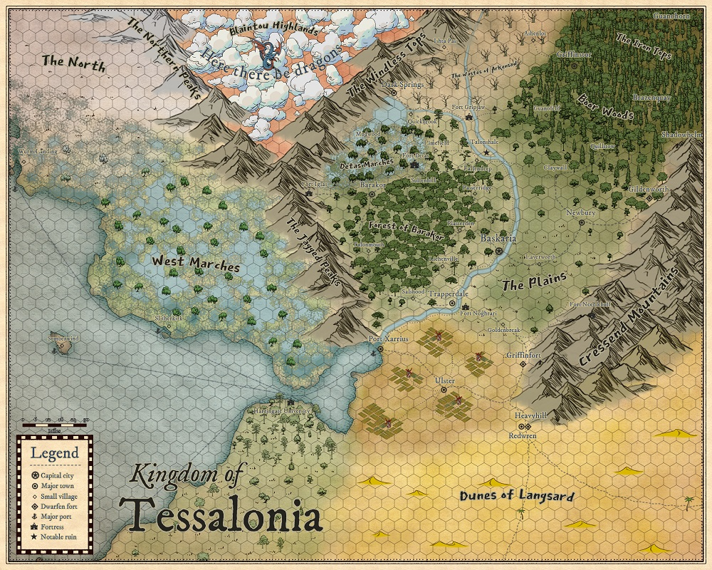

Zemljevid
Spodaj je zemljevid znanih in neznanih pokrajin, znan našim herojem. Klikni na sliko za fullscreen zemljevid.

Kraljestva in regije
Imena v oklepajih so imena, ki jih uporabljajo nativni prebivalci in načeloma niso znana Tessalončanom, torej tudi igralcem ne.
- Kingdom of Tessalonia
- Baskaria
- The Plains
- Forest of Barakor
- Detas Marches
- Ulster Satrapy
- Ulster Fields
- Port Xarrius
- Harringate University
- Dwarfen kingdom (Durimmear Kingdom)
- Cressend Mountains (Durimmear Peaks)
- Plemena divjakov (niso združena, zato ima vsako pleme svoje ime)
- Drow Tribes (Children of Dardaroth)
- Dunes of Langsard (Shifting Sand)
- Blaintou Highlands, here there be dragons
- No Man’s Land
- West Marches
- The North
- The Wastes of Arkensaw